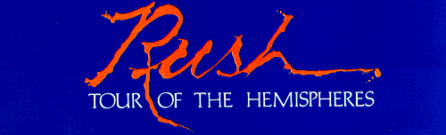

BEHIND THE SCENES
Our Road Manager and Lighting Director is Howard Ungerleider. Weeks in
advance of the show, Herns is glued to the telephone, with the promoters,
stage managers, caterers, and hotels in each city on the tour. It is his
job to arrange all the travel, accommodations, technical requirements, and
personal needs for the band and the crew. He also takes care of the band
finances. As lighting director, Herns if the man who designs the system
itself, and operates the control panel during the show.
Mike Hirsch is our Stage Manager, who arrives each morning with the
first truck and the lighting crew, and is the last to leave in the early
hours of the following day, with the last truck -- and the lighting crew!
Michael supervises all aspects of the equipment load-in, set-up, and load-out.
He organizes the sound checks, the backstage security, and the set changes
during the show, ensuring that the show starts, runs and ends on time.
Our Concert Sound Engineer is Ian Grandy. His job involves the choosing
and placing of the individual microphones, and the mixing of the total
sound from the sound board in the main house, where he also adds his effects
wizardry to enhance the off-stage sound. Also as Crew Co-ordinator, Ian
looks after the book-keeping and organizational needs of the crew.
Alex's personal man is Liam Birt, who, as Stage Right Technician, is
responsible for the set-up and maintenance of all his amplification
and effects equipment. He also choreographs the tight guitar changes Alex
requires, assisted by his look alike cohort Jack Secret (a.k.a.
Tony Geranios), who is also the guitar maintenance man, and keeps
the instruments in tune during the show. Tony also sets up and maintains
the synthesizers for both Alex and Geddy.
Skip Gildersleeve is Geddy's right hand man, as Stage Left Technician.
Better known to friends and fans alike as the Slider, he is the one who
sets up and maintains all of Geddy's guitars and amplifiers, effecting his
instrument changes, and on-stage needs.
Larry Allen appears nightly as Centre Stage Technician, setting up and
meticulously maintaining the drum kit. He also is responsible for getting
the sticks and assorted mallets into Neil's hands in time for his changes.
Larry also serves as the Official Tour Shravis.
Our films are made by a man from New York called Nick Prince, and
our projectionist is Harry Dilman.
Those daring drivers are George Hoadley, Pat Lynes, Arthur "Mac" MacLear,
and Tom Whittaker.
Concert Sound by National Sound, Springfield, Va.
Technicians -- Tom Linthicum, Terry Ward, and Greg Connolly
Lighting by See Factor Industries, Inc., New York City
Thanks also to: Fanfare Sound, Chicago/Electrosound P.A.,
U.K./Len Wright Travel, U.K./See Factor Trucking, New York
City/Edwin Shirley Trucking, U.K.
Management is by Ray Danniels and Vic Wilson, SRO Productions, Toronto,
Canada
Booking Agencies
Canada -- The Agency, Toronto
United States -- American Talent International, New York City
United Kingdom -- Bron Agency, London
Correspondence -- P.O. Box 640, Thornhill, Ontario, Canada L3T 4A5
In the beginning, in 1974, there was an album called "RUSH" and a
fresh-faced youthful threesome from Toronto, Canada, pounding out heavy
rock rhythms in Zeppelin-type style.
Four years and another five discs later, in '78, there is an album called
"HEMISPHERES" and a more mature, more experienced band creating
music of a personal, highly developed and
inarguably unique nature.
First taste of what was to come occurred shortly before the release of RUSH's
second album, "FLY BY NIGHT", when original drummer John Rutsey left the
band and new skinsbeater Neil Peart arrived. Immediately Peart took ahold
of the lyric reins and RUSH's music, with the full consent of the two remaining
founding members Alex Lifeson (Guitar) and Geddy Lee (Bass, Vocals), began
to take on a less straight ahead, more mystical flavour. A third platter,
"CARESS OF STEEL", saw this development taking further shape, with a whole
side being devoted to the tale of a soul-searching quest for "The Fountain
of Lamneth". But is wasn't until their fourth album that RUSH truly defined
their role as epic music story-tellers, scions of Sci-Fi and sword and sorcery
as well as a rock band.
Entitled "2112", once again an entire side of the album was taken up with
the musical relating of a titanic tale. This time around it was a case of
futureshock, a story of a society in the 22nd century living under the
so-called "Temples of Syrinx" ...a race of priests who regarded music as a
corrupt force force and who reckoned that a guitar was "a toy that helped to
destroy the elder race of man!" When such an instrument was played in one of
their temples, and its joyous music filled its barren halls, the priests
reacted with predictable venom.... "2112", lovingly crafted, stunning and
stimulating, marked a turning point in RUSH's career, becoming a hugely
successful album. In an attempt to acquaint new-found fans with their past
recorded work, the next RUSH release was a double, retrospective style live
album called "ALL THE WORLD'S A STAGE". And later, in 1977, the band again
broke new ground by coming to Britain, encasing themselves in rural Rockfield
Studios in Wales and recording an album by the name of "A FAREWELL TO KINGS".
Away from the bustle of city life, RUSH came up with a pastoral yet powerful
album, its by now traditional 'epic track' present in the form of the space
opera "Cygnus X-1", a story about a spaceship pilot plunging through a black
hole in space. And if you thought that RUSH might have exhausted all areas
of inspiration, then lend an ear to this, their latest album "HEMISPHERES",
in which -- to borrow a phrase -- they boldly go where no band has gone before.
Again recorded at Rockfield, the album contains just four tracks, two short,
straightforward and sensitively rendered ("The Trees" and "Circumstances")
the other couple high-powered, hot-blooded and often mind-blowing in their
complexites ("La Villa Strangiato" and ``Hemispheres"). It is these latter
two numbers that show just how greatly RUSH have developed over the years.
The band call "La Villa Strangiato" a "musical reconstruction of some of
Alex's nightmares" (apparently the guitarist is often plagued by the most
vividly bad dreams) and appropriately it's totally unlike anything they've
ever attempted before. It's many parted, multi-faceted and definitely
deserving of careful scrutiny and many plays. Meanwhile "HEMISPHERES" itself
brings an end to the story of "Cygnus X-1", which had its beginnings on the
previous album "A FAREWELL TO KINGS". It had, if you remember, a cliff hanger
ending when our hero disappeared through a gapin black hole...never to be seen
again? The "2112"-length "Hemispheres" number concludes the tale in
unexpected, unorthodox fashion -- if you expected RUSH to cop out and go for
usual science fiction stand-by explanations of "other dimensions" or
"matter transportation", think again. "HEMISPHERES", through hard-hitting
and dynamic, evocative lyrics, tells the tale of a battle between the gods
Apollo and Dionysus, of the intervention of the deity Cygnus and of the
"balance" he eventually manages to achieve.
All this, plus no small amount of rock and roll as well. What more could
you wish for?
written by Geoff Barton
ALEX LIFESON
My amplifiers are three Hiwatt 100's spread over four 4x12
Hiwatt cabinets and one Leslie cabinet, with one spare amplifier and
two spare cabinets. A Fender J.B.L. Twin Reverb is used for primary
p.a. miking.
My guitars are one each Gibson ES335, Gibson ES355, Gibson Les
Paul Standard, Gibson Custom Double-Neck, custom built Pyramid,
Fender Stratocaster, Roland Guitar Synthesizer, Gibson Dove, Gibson
J-55, Gibson B45-12, Gibson C-60 classical, and a Ramirez classical.
I also play a set of Moog Taurus pedals.
The effects I use are three Rolands 301 Space Echo's, one Roland
chorus, an Electric Mistress, a Morley volume pedal, a Cry Baby Wah
Wah, a Maestro parametric filter, Ashley pre-amps for the acoustic
guitars, and a custom build effects board designed by L.B., and built
by Steele-Power Supply.
NEIL PEART
My drums are all by Slingerland, with the inner surface of the wooden
shells treated with a process called Vibra-Fibing. This consists of a thin
layer of glass fibre and resin, which cuts of two 24" bass drums, 6",8",10",
and 12" concert toms, 12", 13", 15", and 18" tom-toms, and a 5"x14" wood
shell snare drum. All cymbals are by Avedis Zildjian, with the exception
of an 18" Chinese cymbal. The Zildjians are 6" and 8" splash, two 16", one 18"
and one 20" crash cymbals, and 22" ride, a pair of 13" high-hits, and 18" pang
and a 20" China type.
In the percussion department are orchestra bells, tubular bells, wind
chimes, cratoles, timbales, tympani, gong, temple blocks, bell tree, triangle,
and melodic cowbells.
For heads I use Remo black dots on the snare and bass drums, Ludwig silver
dots on the concert toms and timbales, and Evans Looking Glass (top), and
Speed King pedals, and Tama and Pearl stands. I use Pro-Mark 747 drumsticks
with the vanish sanded off the gripping area.
GEDDY LEE
I use two Rickenbacker 4001 basses, one Rickenbacker 4002 bass, one
custom-modified Fender Precision, one custom Rickenbacker double-neck,
incorporating a 4001 bass and a twelve-string. All my basses are fitted with
Badass bridges and Roto-Sound strings, and a Roland Chorus is used on the
guitar.
My amps are two BGW 750-B's, through two Ashley pre-amps, into two
2x15 Teal design cabinets, and two Ampeg V4B 2x15 cabinets. All cabinets
are fitted with JBL K140 speakers. I also use a Fender Twin Reverb for
guitar.
My synthesizer set-up consists of a Mini-Moog, Moog Taurus pedals, an
Oberheim eight-voice polyphonic, and a Roland Space Echo.
The Hemispheres Tourbook
photo gallery